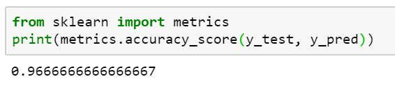

I build a model that categorizes three different types of Iris flowers - setosa, versicolor,
virginica - using the Python libraries scikit-learn, the Nearst Neighbors algorithm used in
machine learning and the Iris Flower dataset. You can see the code here.
Results from the model:
The mode predicts the type of Iris flower with a 96.7% accuracy given the Iris Flower dataset.